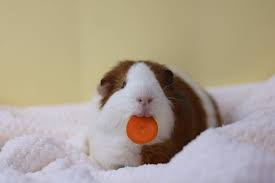
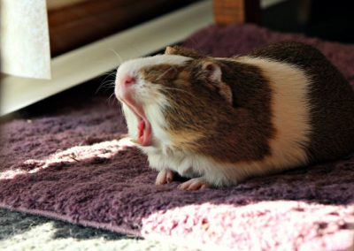

Guinea Pigs are one of the best animals to have. Guinea pigs are cute. They know how to do a lot of tricks. They also like vegetables. They are very smart.
 Some facts about guinea pigs is, they can be wild animals. .They aren't pigs and they don't come from Guinea. .A male guinea pig is called a boar and a female guinea pig is called a sow. .It is important for guinea pigs to chew on something because their teeth grow constantly. .They can live between 7 and 9 years. .A guinea pig is able to run at only three hours old. .Guinea pigs nails grow constantly so it is important to clip them. . When they are happy, they jump up in the air. It is called "popcorning" .Guinea Pigs are one of the most popular house pets. .They are also one of the most adorable animals. .They are smart and can learn a lot in one day. .Guinea pigs can be wild animals or they could be kept as pets.
Guinea Pigs eat vegetables like carrots, lettuce, spinach, kale, or parsley. They eat fruits like grapes, strawberries, watermelon, apples, oranges, and more. Another thing they eat is Timothy hay, pellets, zucchini, and sweet potatoes. If you feed them to much, it can cause stomach problems. You are only supposed to feed guinea pigs in the morning, afternoon, and at night.
Guinea pigs can do a lot of tricks. They can stand up, walk around in a circle, shake, and do obstacle courses. They can also learn their name. They can follow you, or even play dead. One of the most useful and popular tricks is learning how to use a litter box. It takes a lot of patience to teach them. You always want to reward them when they do a trick.
When you first get a guinea pig, you have to let it get used to it's surroundings. When you first get one and have another guinea pig,you don't introduce them to each other right away. You have to wait at least 1-2 weeks before you introduce them or they will possibly fight. Start off by feeding them little amounts of food. Let them get used to you before you pick them up. Give them something to hide in just incase they feel scared. They can either be scared, or more trusting depending on what you do when you get them. Guinea pigs are very small animals. If you go up to them, you are like a giant to them. It is important not to scare them.